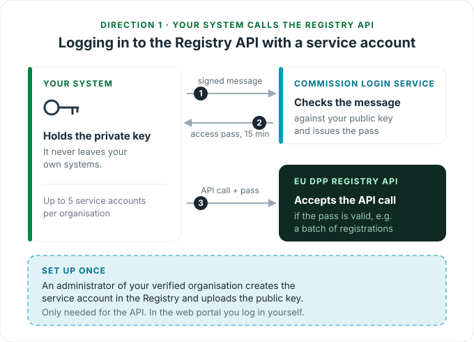
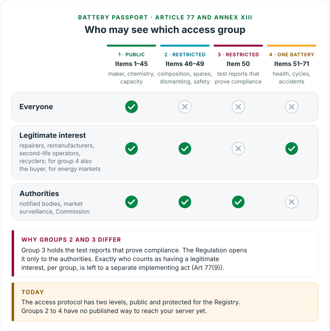

Battery passports must be registered from 18 February 2027. The Commission's 30 October 2026 technical package for the EU DPP Registry adds a registration API, service-account and self-hosted authentication, and a semantic model for batteries. Registration requests JSON, the DCAT catalogue is only announced, and battery registration is still not confirmed.
If you place electric-vehicle batteries, light-transport (LMT) batteries or industrial batteries above 2 kWh on the EU market, each battery needs a battery passport from 18 February 2027, and the Battery Regulation requires its unique identifier to be uploaded to the EU DPP Registry. On 30 October 2026 the Commission published the technical rules for registering them by machine, on its DPP resources page: a registration API, the way your systems and your passport server must authenticate, and the first semantic data model, which covers batteries only.
The short version
- Build now. Your passport is a JSON document on your own server, checked against the Commission's published schemas, and registered through the web interface or the new API.
- Start with the seal. Registering requires a verified organisation, and verification requires a qualified electronic seal held on a qualified device.
- Do not count on it working yet. The newest User Guide still says a battery registration cannot yet succeed, and no Commission text says it now does.
In July we closed our post on the Registry going live with two open gaps: no API for operators, and no battery data model. This package closes most of both. Quotes below are verbatim from the Commission's texts.
What the package contains
Six documents are new. Two others on the same page have been updated around them.
- API Integration Guide for economic operators, plus the OpenAPI specifications (OpenAPI 3.1, version 1.0.0): how a system submits registrations.
- Service Account Technical Integration Guide: how your systems log in to that API.
- Self-Hosted Authentication Guide: how your passport server recognises the Registry when it asks for the protected part of a passport.
- Semantic Data Guide, plus the Semantic Data Artifacts: the code lists, validation rules and schemas for the core passport and for batteries.
- Updated: the User Guide for Economic Operators v1.03 (last published 16 September 2026; the resources page labels it "v3"), and the Digital Batteries Passport data points by category, v3.2 of 19 October 2026, since replaced by version 4 of 19 November 2026.
Which data standards the model uses
A short glossary first. SKOS is a format for code lists, SHACL a language for validation rules, RDF the underlying data model, and JSON-LD a way to give ordinary JSON keys a shared meaning. The table lists the W3C standards that appear in the published files and the role each one plays.
| Standard | What the package does with it |
|---|---|
| SKOS | The master data. Every field and every code is a concept in one of 17 concept schemes. |
| SHACL | The master rules. 18 shape files; the guide states that the other schemas are generated from them. |
| RDF | The data model underneath, published as Turtle files. |
| JSON-LD | Five contexts that map plain JSON keys to vocabulary terms, layered core to product group to sub-group. |
| SPARQL | Only inside SHACL shapes, for checks such as code-list membership. There is no query endpoint. |
| XSD | Used for datatypes. The guide describes XML Schemas, but the archive contains no .xsd file. |
| OWL | Version metadata only (ontology IRI, version IRI, version info). No classes, properties or axioms. |
| DCAT | Announced. The guide says the repository "will publish" a DCAT-AP 3.0.1 catalogue. It is not in the package. |
SKOS, SHACL, RDF and JSON-LD carry the model; SPARQL, XSD and OWL have supporting roles; DCAT is announced for later. Registration itself uses plain JSON. Section 2.1 of the Semantic Data Guide is explicit: "The registration process will be requesting JSON data format, as it is the only mandatory data format in accordance with EN 18216:2026." That JSON is checked with a JSON Schema (draft 2020-12, a specification that does not come from the W3C), which the Commission generates from the SHACL shapes. The shapes check the same passport when it is expressed as JSON-LD or RDF.
In the published files the generated schemas check less than the shapes they come from. A battery shape requires a specific unit for each field, volts for a voltage for example, where the JSON Schema accepts any unit address, even one outside the code list. The shapes also require item-level registration for batteries and block the fields a battery sub-group excludes; the JSON Schemas do neither. A passport can therefore pass the JSON Schema and still fail the shapes. The API guide does not say which check the Registry runs on the passport it fetches, so test against both until the Commission says.
Two details for passport system builders
Every passport declares which releases it was built against, in a field called contentSpecificationIds: at least a core release and a product release, plus the sub-group where one applies. And language tags must carry a region: en-IE passes, en fails.
Licensing is the other one, and it is simpler than it looks. The Commission publishes the 17 vocabularies and the API specifications under the open-source licence EUPL-1.2, and the Implementing Regulation makes the semantic repository free to use (Article 12(7) of Regulation (EU) 2026/1778). You can build against these files and validate your passports with them without asking anyone. The shapes, schemas and contexts carry no licence statement yet, so if you ship copies inside your own product, keep the Commission's source reference with them.
Registering through the API
The API is small, and its rules need careful reading. It has five operations: list the valid product groups, submit a registration, and three calls on the Activity Dashboard (the Registry's task log) to follow a submission and read the per-item results. There is no operation to read, update or withdraw a registration, and you still verify your organisation in the web interface, since the API has no route for it.
One submission registers up to 100 passports at once. Each item in it is one passport with its own UPI, and all items share one product group. A submission is at most 10 MB, in JSON only. For batteries the request must name a sub-group. The examples in the API guide and the OpenAPI file use EV and LMT, while the data model calls its sub-groups evb, ind and lmt, and nothing maps the one onto the other, so ask the Registry for the valid list at runtime. Registration is all or nothing: if one passport in the batch fails, none of them is registered.

Since our July post, the limit on the Unique Product Identifier (UPI), the web address of your passport, has grown to 2,000 characters. The Registry also does more than store a record: it fetches your live passport at the UPI and validates it. So your DPP must be hosted, and reachable at its UPI, before you register it.
Authentication runs in both directions
The package defines two separate login arrangements, one for each direction. They are easy to mix up, so here they are named by who is calling whom.
1. Your system calls the Registry: the service account
This one matters only if you register through the API. An administrator of your verified organisation creates a service account in the Registry (at most five per organisation) and uploads the public half of a key pair. Your system proves who it is by signing a short message with the private half, which never leaves your systems, and gets back an access pass that is valid for 15 minutes. Only elliptic-curve keys are accepted and shared passwords are not supported. A few details differ from what common software libraries do by default, so give your developer the Service Account guide itself rather than a summary.

2. The Registry calls your server: the protected part of the passport
Your passport has a public part and a protected part. When you register, the Registry first opens your passport like any visitor and reads the public part. It then asks again, this time carrying a short-lived pass signed by the Commission, and your server checks that pass before it hands over the protected part. No pass means the public part. A pass that fails the check means a refusal, never the public part instead. A website made of fixed files cannot run that check; it needs a small program on the server, or a passport provider who does it for you.

Two levels today, more later
For now there are only two levels, public and protected, and the Registry is the only caller that may see the protected part. Batteries need more. Following Article 77(2) and Annex XIII of the Battery Regulation, the battery data model sorts every data point into four access groups: public data; data for persons with a legitimate interest, notified bodies, market surveillance authorities and the Commission; data for notified bodies, market surveillance authorities and the Commission only; and data on an individual battery for persons with a legitimate interest. No published procedure yet lets anyone in the last three groups fetch their part from your server.

For other product groups the rules will come product by product. The Ecodesign Regulation leaves who may read or update which data to each product's delegated act (Article 9(2) of Regulation (EU) 2024/1781), and Article 11 lets the Commission set procedures for the digital credentials of those who have access rights. The self-hosted guide adds only that identifying operators by their unique operator identifier will come in a future version. Nothing published says yet how other callers will reach the protected part.
How this relates to the European DPP standards
Both guides cite only internet standards from the IETF. Neither refers to EN 18239 or EN 18246, the CEN/CENELEC standards on access rights and on data authentication we described in our field guide to the eight DPP System standards, and the Implementing Regulation does not refer to them either. They work at different levels. The guides set up trust between the Registry and an operator's server. EN 18239 deals with who else may read or change controlled data, from authorities to repairers, and EN 18246 with signing data so that both the data and its issuer can be verified. Where they meet, the guides agree with the drafts we have read: public data needs no login, and controlled data is released only after authentication and authorisation. The drafts ask for authentication at a high level of assurance. In the Registry that strong identity check sits one step earlier, when your organisation is verified, for example with a qualified seal or signature (Article 4 of Regulation (EU) 2026/1778). Neither standard is cited in the Official Journal yet; the Commission's list of harmonised DPP standards will show when they are.
What changed in the User Guide
Version 1.03 spells out what version 1.0 left implicit: your seal must sit on a qualified device, such as a smart card or USB token from your trust service provider, or come from a qualified remote-signing service, and a certificate stored as a software file (.p12 or .pfx) is rejected. If you have not yet bought a seal, check which kind you are buying.
Batteries: model published, registration not confirmed
Two facts that do not yet line up
The battery data model is now published. Yet the User Guide, updated six weeks earlier, still says successful registration of battery passports is "not currently available", and no Commission text says it now works. Test a registration before you rely on it.
Batteries remain the only product group the Registry offers, at item level only. Detergents, construction products, textiles and the ESPR groups have no published semantic model.
Some questions to policy makers
Reading the battery data model next to the Commission's guidance on battery data points (version 4 of 19 November 2026, which like v3.2 says it is not an official Commission position), four points left us unsure. We may well be misreading them, so we put them as questions.
| Data point | The guidance | The data model | Our question |
|---|---|---|---|
| Critical raw materials | Refers to Annex X(1) of the Battery Regulation: cobalt, natural graphite, lithium and nickel | Lists the 34 critical raw materials of the Critical Raw Materials Act | Which list should a battery passport use? |
| Temperature range for voltage values | "When relevant" | Always required | How does a passport say that a range is not relevant? |
| Separate-collection marking | Yes or no | Only "yes" accepted | Is a "no" meant to be impossible? |
| Rated capacity | Public item 25 is a repetition, not to be filled; restricted item 51 is the same value as item 11 | Drops item 25 but keeps a restricted field of its own, required for EV and LMT batteries | Should operators fill it separately, or carry over item 11? |
The second and third matter for anyone building today, because a passport that follows the guidance could fail the data model's checks. If you work on these texts and can tell us the intended reading, we would be glad to hear it.
What economic operators will have to do, batteries already before February 2027
Every product group with a passport obligation will go through the same steps once its rules apply. For batteries they are due before 18 February 2027. Our order of work:
- Get verified with the right seal. A qualified electronic seal (QSeal) is a company's legally recognised digital stamp; a sole trader uses a qualified signature (QES) instead. Buy it from a provider on an EU trusted list, held on a qualified device or used through a remote-signing service, and apply it in PAdES, the standard format for signatures inside a PDF. Buying one takes time, so start here.
- Host the passport before you register it. The Registry fetches it, so the UPI has to resolve over HTTPS to valid JSON that declares its
contentSpecificationIds. - Validate against both JSON Schema and SHACL for your sub-group, until the Commission confirms which checks the Registry runs at registration. Any JSON Schema 2020-12 validator and an open-source SHACL validator such as pySHACL will do; this is a job for your developer or passport provider.
- Build the protected endpoint to the guide: the public view for anonymous requests, 401 on any invalid token with no fallback, origin-exact audience checks, and 403 unless the requesting organisation's identifier matches your policy byte for byte.
- Set up the service account if you will use the API. Keep the key in a hardware module if you can, and plan the rotation: two active credentials at a time, each valid for at most two years.
Because batteries register per item, the numbers add up fast. The web interface takes one passport per form, or up to 100 per uploaded file, all or nothing. At tens of thousands of batteries a year, that is hundreds of all-or-nothing uploads, so plan for the API. Hosting is needed either way, because the Registry fetches your passport when you register it, and so is the protected endpoint for any battery data that is not public.
How Regen Studio helps
We help economic operators get from regulation to a working, registrable passport: which requirements apply to your product and when, which of your data already covers them, and what your systems need in order to host, protect and register a passport the Registry will accept. If you make batteries and want to know whether your current setup would pass the Registry's checks, that is a conversation we can have this month.
We also help DPP service providers with their roadmap to building systems that meet the Registry's rules.
Sources: European Commission, DPP resources and documentation page (technical package of 30 October 2026): API Integration Guide for Economic Operators v1.0 and OpenAPI specifications 1.0.0; Service Account Technical Integration Guide v1.0; Self-Hosted Authentication Guide for Economic Operators v1.0; Semantic Data Guide v1.0 and Semantic Data Artifacts (core 1.0.0, batteries 1.0.0); DPP Registry User Guide for Economic Operators v1.03 (16 September 2026); Guidance Document: Digital Batteries Passport, data points by category v3.2 (19 October 2026) and version 4 (19 November 2026). Commission Implementing Regulation (EU) 2026/1778; Regulation (EU) 2023/1542 (Batteries). The analysis and advice are Regen Studio's own.